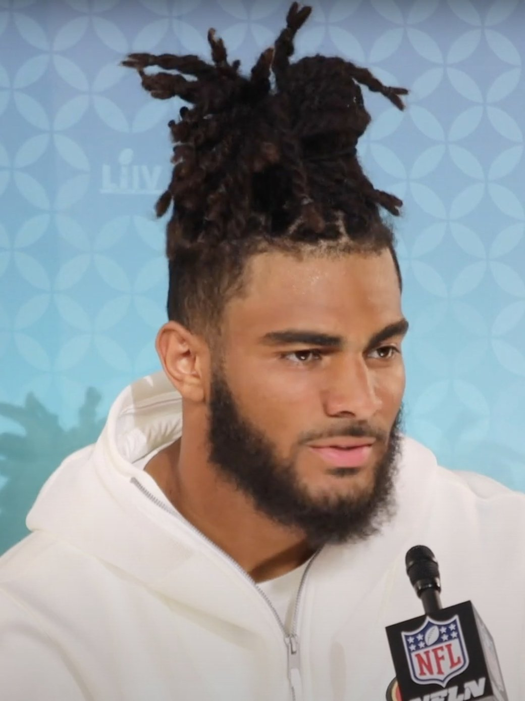
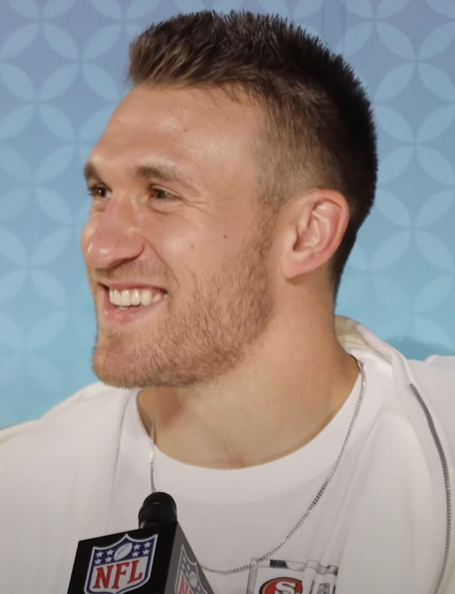

49ers 24, Broncos 14: Dre Greenlaw Gets His Revenge and We're 4 and 0
A 3 to 3 slugfest for a half, then the offense finally woke up. Dre Greenlaw made Denver pay for letting him go, Kittle put it away, Purdy still hasn't been sacked, and now we lose Juice heading to Seattle.

I didn't breathe right until the ball left Brock's hand on that screen to Kittle. That's the honest truth. Seventeen to fourteen, a little over four minutes left, Denver had just gone down the field, punched it in and converted the two, and the whole building had that feeling. You know the one. The one where you start doing math on the drive you just watched instead of the drive you're about to watch.
And then George Kittle caught a screen, turned up the field, and kept going for 56 yards. 24 to 14 with 2:15 left. Game. I was up off the couch before he crossed midfield and I'm pretty sure I yelled something my neighbors heard.
We're 4 and 0.
The first half was a slugfest and I'm fine with that
Three to three at halftime. A Wil Lutz field goal from 52, an Eddy Pineiro chip shot late in the second quarter, and that's it. Two good defenses punching each other in the mouth for thirty minutes and nobody giving an inch. Bo Nix was 14 of 24 for 93 yards at the break. That's not a quarterback having a good day. That's a quarterback getting smothered.
But I'll say what I was saying at halftime, because I meant it then and I mean it now: Kyle was too conservative. Way too conservative. We came in with an offense scoring over 32 a game and he called the first half like he was protecting a lead we didn't have. Run, run, short throw, punt. I get it, Denver's front is real and you don't want Brock taking hits. But this offense has earned the right to take a shot or two, and I spent most of the second quarter muttering at the TV.
Then the second half started and it was like somebody finally took the governor off. Brock started pushing it, Deebo caught a one yard touchdown in the third to put us up 10 to 3, and after Denver kicked another field goal, McCaffrey plowed in from a yard out midway through the fourth to make it 17 to 6. Funny how that works. Open it up and the offense looks like the offense again. I'm not going to pretend I'm not a little annoyed it took until the third quarter for him to figure that out.

Dre Greenlaw played like he had something to prove, because he did
This is the part I've been waiting all night to write.
Denver paid Dre Greenlaw last year and then barely got to use him. He missed all of camp with a quad, then a hamstring kept him out of the preseason and the first six games, and when it was over they cut him loose. Just moved on. We brought him home on a one year deal and a lot of people shrugged.
Nobody's shrugging now. Twelve tackles, a team high, and a forced fumble against the team that gave up on him. He was everywhere. Sideline to sideline, filling the hole on every Denver run, and I swear I saw him barking toward Sean Payton's side of the field at least once. Good. Let him bark. If I'd been through the year he went through, I'd have had a chip on my shoulder too.
When that guy's healthy he's a monster. I've always said it and I'll keep saying it, and Sunday he showed everybody in Denver exactly what they let walk out the door.
Fred A and Fred B
And then there's Fred Warner next to him, seven tackles and two passes broken up, doing Fred Warner things like it's no big deal. I don't know how to explain what it's like watching those two together if you haven't sat through a full game of it. They're Fred A and Fred B. They don't even look like they're communicating. One fills, the other one flows, and the ball carrier just runs out of places to go. It's like they're synced up on some frequency the rest of us can't hear.

I missed this. Without Greenlaw the middle of our defense was good. With him, it's a problem for whoever's on the other side. That's the difference between a defense that holds up and one that wins you games, and Sunday it kept us alive for a whole half when the offense wasn't doing anything.
The secondary deserves a lot of credit
I came into this one worried about Jaylen Waddle. I wrote it in the preview. He's the guy who can turn one blown coverage into seven points, and with no Bosa and a thin pass rush, I figured Nix would have all day to find him.
He didn't hurt us. Not really. Waddle got his touchdown late, finished with five catches for 35 yards, and that's it. Nix ended up 25 of 42 for 214 yards. That's barely five yards an attempt. Their leading receiver was a running back catching dump offs. The secondary played a heck of a game, and Upton Stout and Marques Sigle were in on a ton of plays. I'll take that every week.
The one thing that bugged me? We didn't sack him once. Zero. Without Bosa there's just not enough juice off the edge, and Nix had more time than I'd like on that last touchdown drive. We got away with it. I'd rather not have to get away with it in Seattle.
Purdy, McCaffrey, and zero sacks again
Brock was 19 of 30 for 218, two touchdowns, no picks, and once again nobody touched him. Zero sacks. That's four straight games to open the year without our quarterback going down once, and this time it came against a Denver front that led the league in sacks last year. I said in the preview I thought the streak would die Sunday. I've never been happier to be wrong.
Christian looked good too. Fifteen carries, 52 yards and the touchdown, three catches on top of that. Not a monster stat line, but he ran hard against a good front and he looked like himself, which is all I'm asking for in October.
Juszczyk's knee is the bad news
Now the part that ruined my mood a little.
Kyle Juszczyk went down early in the fourth quarter with a knee injury and didn't come back. And look, I know people outside the Bay hear "fullback" and tune out. They don't get it. Juice is the straw that stirs the drink in this offense. He's the best fullback in the league and a Pro Bowl regular, he lines up everywhere, he catches it, he blocks, and Kyle's whole running game bends around him. He had two catches for 28 yards before he got hurt, and you could feel the offense change when he left.

Hopefully it's nothing serious. But from the way it looked, I don't think he's playing next week, and with Bosa still out with that calf, we're going to Seattle without two guys who matter a lot. Denver lost some people too, and a couple of those didn't look good either. Nobody wants to see that. It was a physical, nasty game from the first snap.
Next up: Seattle, and first place
So here we are. 4 and 0, Denver drops to 2 and 2, and next Sunday we go up to Seattle at 1:25 to play the defending champs, who are 3 and 1 and right behind us in the NFC West. First place in the division is on the line.
That place is always tough. It's loud, it's going to be rocking, and they don't like us any more than we like them. Which is not at all. I've hated that building for as long as I can remember and I'll hate it until I die. And we're going in there without Juice and without Bosa.
But we're 4 and 0. Purdy hasn't been sacked. Greenlaw's back and playing angry. Fred A and Fred B are together again. I'll take my chances.

If you want to see how I called this one beforehand (I had us winning 26 to 20, so close enough), the Broncos preview is here. Every game this season lives on the 2026 49ers schedule hub, and Juszczyk's knee and Bosa's calf will be tracked on the 49ers injury report all week. And if you missed last week, this is how we survived Arizona. And later that day I made the case that this is the team to beat in the NFC.
Four down. Seattle next. Beat the Seahawks.
More coverage: 49ers · NFL · Bay Area Sports Blog home